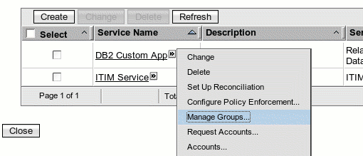
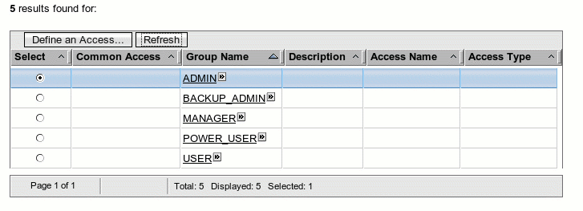

| |
|
This example demonstrates use of the ServiceProvider API to build a
connector to a relational database. It is more complete than the
JNDI example ServiceProvider in that it manages group data and it
handles suspending and restoring accounts. However, this comes at
the cost of additional complexity in code and set up.
The ServiceProvider implementation does not make assumptions about
the schema, except that there is only one type of supporting data
allowed. This is referred to as group data or supporting data,
however, it may correspond to role or some other type on the remote
database. In addition, it does make assumptions about the
service schema, in particular the presence of the attributes described
below. Therefore, the same ServiceProvider implementation can be
used for other schemas, provided that certain conventions are used in
the definition of the service schema and resource definition file.
The service provider is the component that facilitates communication betweeen TIM and the remote database.
To build the examples follow the instructions given in Building the Examples.
Add the examples.jar file created by the build process to the application server's classpath by following the instructions given in Adding examples.jar to Classpath.
An example service profile suited to the relational database table described below is also included.
To install the example, run the build file (build.bat for windows and build.sh for unix) found in the serviceprovider directory. The build file will create a rdbmsservice.jar file in the same directory. (You will need to set the ANT_HOME_LIB variable first.)
Now log in to ITIM as ITIM Manager and select Configure System > Manage Service Types. Press the Import button and select rdbmsservice.jar. rdbmsservice.jar is a simple jar file that contains a directory called fileserviceprofile and the following files:
| File Name | Description |
schema.dsml |
This defines the schema for accounts, services, and groups for the new relational database service. The account class, erRDBMSAccount, represents an account entry in the database. The service class, erRDBMSService, describes the information needed to communicate to the database and interpret the results back. The group class, erRDBMSService, corresponds the ROLE table in the database. |
resource.def |
This file describes service profile configuration information, including which connector properties and service parameters should be sent to the ServiceProvider implementation. |
CustomLabels.properties |
Human understandable labels for the schema entries. These will be displayed in the TIM user inteface. |
erRDBMSAccount.xml |
An optional file containing the account form. This will be imported during profile install so that the form will not have to be designed in the form design utility. It was created by using the form designer and copying the data from the LDAP server into a file with the account class name and an 'xml' postfix. |
erRDBMSService.xml |
An optional file containing the service form. This will be imported during profile install so that the form will not have to be designed in the form design utility. It was created in the same way as the account form. |
After installing the service profile, restart the application server.
The example uses a database table for accounts and another for roles. These tables are described in the table below.
| Field | Description |
| HRID | Human resources identifier. May not be null. |
| LOGIN | The user id used to log into the customer database application. This is the primary key. May not be null. |
| PASSWORD | The password used to log into the customer database application. |
| FIRST_NAME | The user's given name. |
| MIDDLE_NAME | The user's middle name. |
| LAST_NAME | The user's surname. |
| TITLE | Professional title. |
| ROLE | Membership in a role. This has a foreign key constraint to ROLE_NAME in the Roles table. |
| Internet email address. | |
| STATUS | Status of the account. Possible values are active and inactive. |
| Field | Description |
| ROLE_NAME | The name of the role. May not be null. |
SQL scripts are included that
will create the tables and add a small amount of sample data. Run
the script in file
accounts.ddl
(DB2),
accounts_oracle.ddl
(Oracle) or
accounts_sqlserver.ddl
(Microsoft SQL Server)
using the native database command tools.
Check the database to make sure that the tables have been created.
The service provider connects to the database via an application server
data source. For the same database as ITIM uses there is no additional
setup to do on the application server. However, to provision to another
database, a data source must be set up on the application server.
These are the steps for Microsoft SQL Server on WebSphere. Other combinations
of database vendor and application server are similar, however, you must
use an XA driver to enable it to act in a distributed transaction.
| Name | Value |
| Database type | User-defined |
| Implementation class name | com.microsoft.sqlserver.jdbc.SQLServerXADataSource |
| Name | JNetDirect |
| Description | JNetDirect MSSQLServer Driver (XA) |
| Name | Value |
| Provider | JNetDirect |
| Name | MSSQLServer |
| JNDI name | MSSQLServerDataSource |
Below are some sample values that may be entered when create a new Relational Database service.
| Service Attribute | Description | Example Value |
| Service Name | Used for display in the user interface. | DB2 Custom App |
| Data Source Name | The name of the JDBC resource in the application server. To use a value other than the TIM database, a JDBC resource needs to be configured in the application server. | enroleDataSource |
| Reconciliation Transactional | Whether to execute reconciliation within a transaction. Although account management operations, such as provision, change password, and so on are executed within transactions, reconciliation is not normally executed within a transaction. However, some databases, in particular, Oracle, may require reconciliation to be executed within a transaction. | false (unchecked) |
| Service Attribute | Description | Example Value |
| Add Account SQL | An SQL statement to add an account. Macros have been added to make it easier to specify the attributes names and values since only the values entered by the user will be sent to the service provider. | INSERT INTO ACCOUNTS (#all_attributes) VALUES (#all_values) |
| Change Password SQL | An SQL statement to change passwords. A macro syntax with '#' followed by the name of the TIM attribute is used to substitute the value in | UPDATE ACCOUNTS SET PASSWORD='#erpassword' WHERE LOGIN = '#eruid' |
| Delete SQL | An SQL statement to delete an account. | DELETE FROM ACCOUNTS WHERE LOGIN = '#eruid' |
| Modify SQL | An SQL statement to modify an account. | UPDATE ACCOUNTS SET #all_changes WHERE LOGIN = '#eruid' |
| Restore SQL | An SQL statement to restore an account. | UPDATE ACCOUNTS SET STATUS='ENABLED' WHERE LOGIN = '#eruid' |
| Search SQL | An SQL statement to search for account data. | SELECT * FROM ACCOUNTS |
| Suspend SQL | An SQL statement to suspend an account. | UPDATE ACCOUNTS SET STATUS='DISABLED' WHERE LOGIN = '#eruid' |
The attribute Attribute Map is used to map account and group data field names in the database to names used within TIM. The syntax is similar to a properties file:
eruid=LOGIN erpassword=PASSWORD erAccountStatus=STATUS mail=EMAIL erRDBMSHUID=HRID givenname=FIRST_NAME initials=MIDDLE_NAME sn=LAST_NAME erRDBMSGroupMembership=ROLE erRDBMSGroupName=ROLE_NAME
The value map is to map values on the database to values with an equivalent meaning in TIM. In this example, status is an attribute where this is needed because the relational database knows a value of ENABLED as active but TIM knows a value of 0 as active. The value map for this example is:
erAccountStatus.0=ENABLED erAccountStatus.1=DISABLED
| Service Attribute | Description | Example Value |
| Group Search SQL | An SQL statement to search for group data. | SELECT * FROM ROLES |
| Group DN Attribute | The field in the group table that should be used to identify the group. Usually, the primary key. | ROLE_NAME |
The service provider may be tested by doing reconciliation, provisioning, deleting, and other account operations. However, the first thing to do should be to test connectivity to the database using the test button on the service form.
After a reconciliation has been run the groups will be returned and may be viewed from the Manage Services > Manage Groups drop down menu item.


The service provider has been tested with:
For a more complete implementation these functions would be included:
The code is in the files shown below.
| File | Description |
| RDBMSConnector.java | The main class demonstrating connection from TIM to a database for management of accounts. TIM will call methods add, changePassword, delete, modify, restore, suspend, search, and test when driven by user actions within TIM. |
| RDBMSConnectorFactory.java | Factory class to create an instance of a RDBMSConnector class. TIM will call the method getServiceProvider every time it needs to communicate to the database for account management. |
| CompositeSearchResults.java | Performs SQL search execution for multiple queries and construction of a composite result set. Adapts the results returned from the database to a form understandable by TIM. |
| NoSearchResults.java | In case an error occurred executing a select statement for a reconciliation, this class encapsulates an empty set of results and the error that led to it. |
| QueryMetaData.java | Encapsulates meta data about the SQL query and the rows in the associated data set. |
| AccountQueryMetaDataFactory.java | Gathers query metadata for searching for accounts. |
| GroupQueryMetaDataFactory.java | Gathers query metadata for searching for group data. |
| RDBMSAttributeMap.java | Encapsulates the attribute map to translate from TIM attribute names to remote names and in the opposite direction. |
| RDBMSSQLException.java | Encapsulates an exception generated because the SQL statement entered in the service form. |
| SQLStatement.java | Encapsulates an SQL statement entered by the service owner. It is parsed to determine the input parameters so at execution time the parameter values can be substituted in. |
| SQLSubstitutionLexer.java | Lexer for SQL substitution language used in service forms. |
| sql_substitution.g | Antlr grammar file for the lexer. |
| SQLSubstitutionLexerTokenTypes.java | Tokens in the SQL substitution language. |
| SQLSubstitutionLexerTokenTypes.txt | Generated by Antlr. |